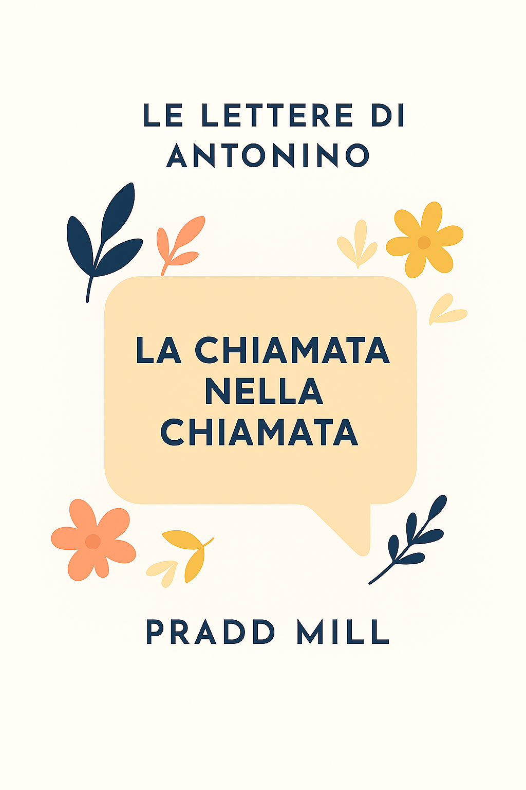

Piattaforma Etica
Uno spazio digitale innovativo per promuovere valori di trasparenza, collaborazione e responsabilità. Un ecosistema che connette persone e idee.

Lettere di Antonino
Uno spazio riflessivo e culturale dedicato al pensiero e alla scrittura. Parole che ispirano, emozionano e lasciano il segno nell'animo.

Bellezza24.com
Portale dedicato all'estetica, benessere, odontoiatria e spa. Innovazione e servizi d'eccellenza per il tuo benessere a 360 gradi.